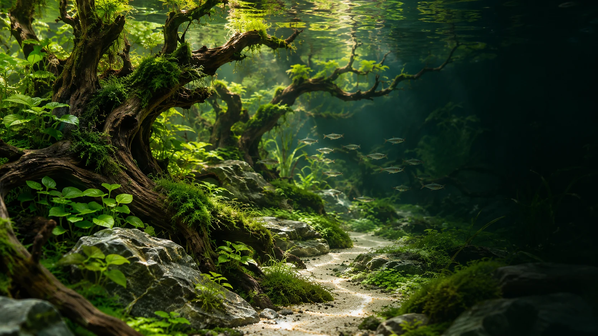

01
الأحواض
حوض نهري جاهز مزروع – 33 لتر
١٬٥٩٩ ر.ساستكشف

قليلٌ من الماء.
وكثيرٌ من الحياة التي تشبهك.
حوض يلفت النظر. نبات ينمو على مهل.
وصخرة تجد مكانها في المشهد.
اختر من أين تبدأ.
من الحوض إلى آخر حجر.
قطع تختارها لعالمك.
حدّد المقاسات، اختر الزجاج، وأضف لمستك.
شاهد الحوض يتغيّر أمامك، ثم احفظ فكرتك
لتعود إليها وتكملها.
 مساحتك. مقاساتك.
مساحتك. مقاساتك.في انعكاس الضوء، وفي ملمس الصخر،
وفي ورقة جديدة.
تفاصيل صغيرة تستحق أن تقترب منها.